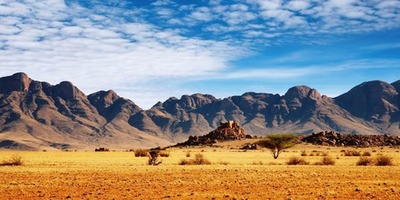

Суша
Суша — часть поверхности планеты, не покрытая водами Мирового океана и другими водными объектами. Любой участок острова или материка, поверхность которого не залита водой любого водного объекта. Готовы отправиться в путешествие восхитительными лесами, могуществинными горами, гордыми лугами и непредсказуемыми пустынями? Тогда вперед!